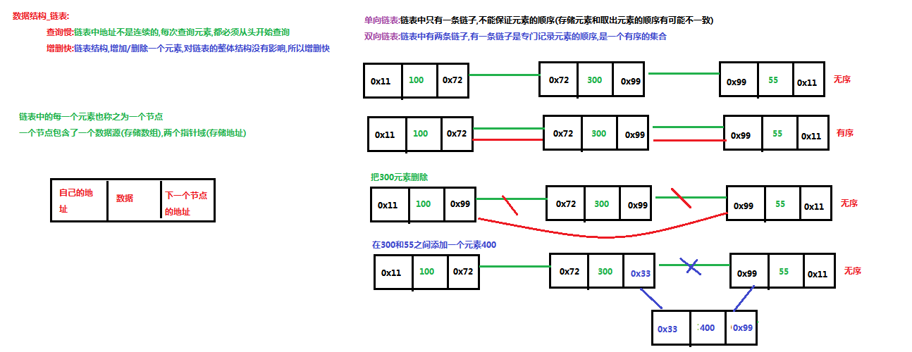
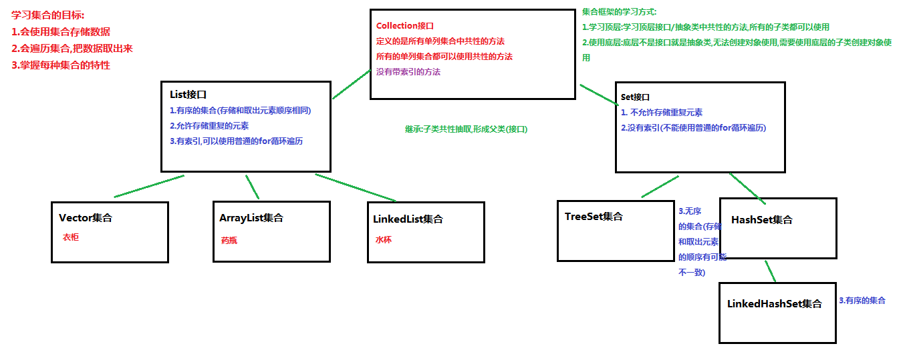
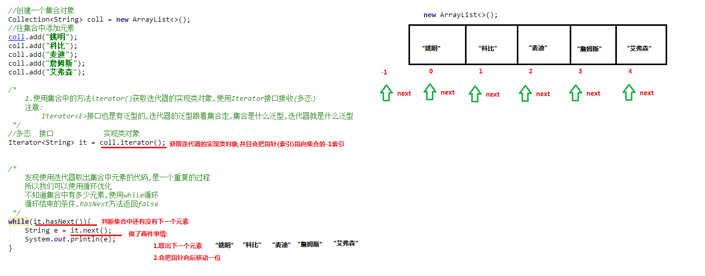
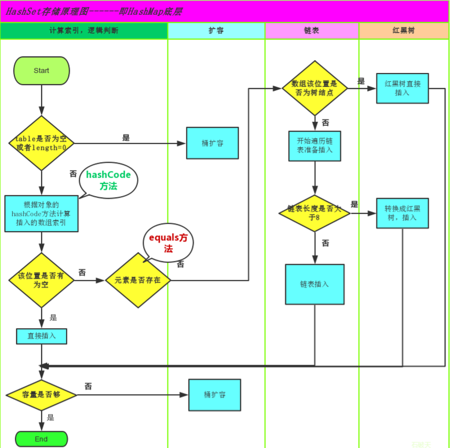

一、数据结构（数据存储的常用结构有：栈、队列、数组、链表和红黑树。）
- 栈（Stack）——先进后出
- 又称堆栈，它是运算受限的线性表，其限制是仅允许在标的一端进行插入和删除操作，不允许在其 他任何位置进行添加、查找、删除等操作。
- 队列（queue）——先进先出
- 简称队，它同堆栈一样，也是一种运算受限的线性表，其限制是仅允许在表的一端进行插入， 而在表的另一端进行删除。
- 数组数据结构（查询快，增删慢）
- 概念：数组:Array,是有序的元素序列，数组是在内存中开辟一段连续的空间，并在此空间存放元素。就像是一排出 租屋，有100个房间，从001到100每个房间都有固定编号，通过编号就可以快速找到租房子的人。

4. 例如ArrayList类和Vector类
4. 链表（查询慢，增删快）
- 概念：由一系列结点node（链表中每一个元素称为结点）组成，结点可以在运行时i动态生成。每 个结点包括两个部分：一个是存储数据元素的数据域，另一个是存储下一个结点地址的指针域。我们常说的 链表结构有单向链表与双向链表，那么这里给大家介绍的是单向链表。
- 查询慢，增删快
- 查询慢：链表中的地址不是连续的，每次查询元素，都必须从头开始
- 链表结构，增加/删除一个元素，对链表的整体结构没有影响，所以增删快

3.例如：LinkedList类和HashSet类
5. 红黑树结构
- 二叉树：binary tree ,是每个结点不超过2的有序树（tree）
- 概念：简单的理解，就是一种类似于我们生活中树的结构，只不过每个结点上都多只能有两个子结点。二叉树是每个节点多有两个子树的树结构。顶上的叫根结点，两边被称作“左子树”和“右子树”。
- 排序树：在二叉树的基础上，元素是有大小顺序的，左子树小，右子树大
- 平衡树：左子树数量等于右子树数量，与之对应的是不平衡树
- 红黑树
- 红黑树本身就是一颗二叉查找树，将节点插入后，该树仍然 是一颗二叉查找树。也就意味着，树的键值仍然是有序的。
- 红黑树的约束：
- 节点可以是红色的或者是黑色的
- 根节点是黑色的
- 叶子节点（特指空节点）是黑色的
- 每个红色节点的子节点都是黑色的
- 任何一个节点到其每一个叶子节点的所有路径上黑色节点数相同
- 特点：速度特别快，趋紧平衡树，查找叶子元素最少和最多次数不多于二倍

十五、Collection集合
- 概念：集合是Java中提供的一种容器，可以用来存储多个数据
- 与数组的区别
- 数组的长度是固定的，集合的长度是可变的
- 数组中存储的是同一类型的元素，可以存储基本数据类型值，集合存储的都是对象，而且对象的类型可以不一致，在开发中一般当对象多的时候，使用到集合进行存储
- 集合框架

- Collection常用功能
- public boolean add(E e)`： 把给定的对象添加到当前集合中 。
- public void clear()` :清空集合中所有的元素。
- public boolean remove(E e)`: 把给定的对象在当前集合中删除。
- public boolean contains(E e)`: 判断当前集合中是否包含给定的对象。
- public boolean isEmpty()`: 判断当前集合是否为空。
- public int size()`: 返回集合中元素的个数。
- public Object[] toArray()`: 把集合中的元素，存储到数组中。
十六、Interator迭代器（java.util.Iterator）
- 迭代：即Collection集合元素的通用获取方式。在取元素之前先要判断集合中有没有元素，如果有，就把这个元素取出来，继续在判断，如果还有就再取出出来。一直把集合中的所有元素全部取出。这种取出方式专业术语称为迭代。
- 常用方法
3. Iterator迭代器，是一个接口，我们无法直接使用，需要使用Iterator接口的实现类对象
Collection接口中有一个方法，叫iterator()，这个方法返回的就是迭代器的实现类对象
Iterator<E> iterator() 返回在此collection的元素上进行迭代的迭代器
4.迭代器的使用步骤
- 使用集合中的方法iterator()获取迭代器的实现类对象，使用Iterator接口接收（多态）
- 注意：Iterator<E>接口也是有泛型的，迭代器的泛型跟着集合走，集合是什么泛型，迭代器就是什么泛型
- 使用Iterator接口中的方法 hasNext判断还有没有下一个元素
- 使用Iterator接口中的方法next取出集合中的下一个元素
- 没有元素，在取出元素抛出NoSuchElementException没有元素异常

5.增强for（只能遍历单列集合）
- 增强for循环(也称for each循环)是**JDK1.5**以后出来的一个高级for循环，专门用来遍历数组和集合的。它的内部原理其实是个Iterator迭代器，所以在遍历的过程中，不能对集合中的元素进行增删操作。
- 格式：
for(元素的数据类型 变量:collection集合or数组){
//写操作代码
}
3. 注意事项：
- 底层使用的也是迭代器
- 新for循环必须有被遍历的目标。
- 目标只能是Collection或者数组（单列集合）
- 新式for仅仅作为遍历使用
- 遍历时不能添加或删除
十七、泛型
- 概念：

- 创建集合对象，不使用泛型
- 好处：集合不使用泛型，默认的类型就是Object类型，可以存储任意类型的数据
- 弊端：不安全，会引发异常
- 创建集合对象，使用泛型
- 好处：
- 避免了类型转换的麻烦，存储的是什么类型，取出的就是什么类型
- 把运行期异常（代码运行之后会抛出异常），提升到了编译器
- 弊端
- 泛型是什么类型，就只能存储什么类型
- 含有泛型的类
- 格式：
修饰符 class 类名<代表泛型的变量> { }
示例：
public class Person<E> {
private E name;
public E getName() {
return name;
}
public void setName(E name) {
this.name = name;
}
}
4. 含有泛型的方法
- 格式：泛型定义在方法的修饰符和返回值类型之间
修饰符 <代表泛型的变量> 返回值类型 方法名(参数（参数使用泛型）){ }
示例：
public <E> void method1(E name){
System.out.println(name);
}
public static <S> void method2(S str){
System.out.println(str);
}
2. 含有泛型的方法，在调用方法的时候确定泛型的数据类型，传递什么类型的参数，泛型就是什么类型
- 个人心得：
- 在方法中使用泛型的时候，凡是能用到变量类型的地方都可以使用泛型，包括返回值类型，参数类型等
- 但是泛型在使用该方法的时候就已经被定义好了，所以返回值必须和参数的泛型一致
- 问题：
- 修饰符和返回值类型之间的泛型字母什么作用
- 返回值类型为什么必须和参数类型一致（因为返回值类型无法确定？）
5. 含有泛型的接口
- 格式：
修饰符 interface接口名<代表泛型的变量> { }
2. 实现方式
- 方式一：定义接口的实现类，实现接口
public interface Inter<I> {
public abstract void method(I i);
}
GenericInterFAceImpl实现了Inter接口，并且指定泛型为String，所以重写next方法泛型默认就是String
public class GenericInterfaceImpl implements Inter<String> {
@Override
public void method(String str) {
}
}
- 方式二：接口使用什么泛型，实现类就使用什么泛型，类跟着接口走
public interface Inter<I> {
public abstract void method(I i);
}
public class GenericInterfaceImpl2<I> implements Inter<I> {
@Override
public void method(I i) {
System.out.println(i);
}
}
6. 泛型通配符
- 不知道使用什么类型来接收的时候,此时可以使用?,?表示未知通配符。此时只能接受数据,不能往该集合中存储数据。
- 注意：泛型没有继承的概念。当使用泛型类或者接口时，传递的数据中，泛型类型不确定，可以通过通配符<?>表示。但是一旦使用泛型的通配符后，只能使用Object类中的共性方法，集合中元素自身方法无法使用。
- 使用方式：
- 不能创建对象使用，只能作为方法的参数使用
- 通配符高级使用----受限泛型
- 泛型的上限：
- 格式：类型名称 <? extends 类 > 对象名称
- 意义：只能接收该类型及其子类型
- 泛型的下限
- 格式：类型名称 <? super 类 > 对象名称
- 意义：只能接收该类型及其父类型
比如：TreeSet类
6. List集合（java.util.list extends Collection）
- 特点：
- 它是一个元素存取有序的集合
- 它是一个带有索引的集合，通过索引就可以精确的操作集合中的元素（与数组的索引是一个道理）
- 集合中可以有重复的元素，通过元素的equals方法，来比较是否为重复的元素
- 常用方法
- public void add(int index, E element) : 将指定的元素，添加到该集合中的指定位置上。
- public E get(int index) :返回集合中指定位置的元素
- public E remove(int index) : 移除列表中指定位置的元素, 返回的是被移除的元素。
- public E set(int index, E element) :用指定元素替换集合中指定位置的元素,返回值的更新前的元素。
7. List的子类
- ArrayList集合（不是同步的，即多线程，查询快，增删慢）
- java.util.ArrayList 集合数据存储的结构是数组结构。元素增删慢，查找快，由于日常开发中使用多的功能为 查询数据、遍历数据，所以 ArrayList 是常用的集合。
- LinkedList集合（链表实现，不是同步的，查询慢，增删快）
- java.util.LinkedList 集合数据存储的结构是链表结构。方便元素添加、删除的集合，
- LinkedList提供的方法（不能使用多态）
- public void addFirst(E e) :将指定元素插入此列表的开头。
- public void addLast(E e) :将指定元素添加到此列表的结尾。
- public E getFirst() :返回此列表的第一个元素。
- public E getLast() :返回此列表的后一个元素。
- public E removeFirst() :移除并返回此列表的第一个元素。
- public E removeLast() :移除并返回此列表的后一个元素。
- public E pop() :从此列表所表示的堆栈处弹出一个元素。
- public void push(E e) :将元素推入此列表所表示的堆栈。
- public boolean isEmpty() ：如果列表不包含元素，则返回true。
- 如果没有元素进行查询，则会报NoSuchElementException异常
- Vector（单例集合）
- 可以实现可增长的对象数组，与新collection不同，vector是同步的，线程安全
- 底层是数组
- 面试题；
- ArrayList和Vector的区别
- 相同点：都是数组实现，增删慢，查询快，JDK1.2之后都实现了List接口，有序，有索引，可以重复
- 不同点：
- ArrayList是线程不同步的，效率高。Vector是线程同步的
- ArrayList从1.2开始出现的，Vector是jdk1.0出现
- ArrayList方法命名更加规范
- 枚举Enumeration和迭代器的区别
- 迭代器允许调用者移除元素，比枚举多了一个remove方法
- 方法名称得到了改进
8. Set接口（java.util.Set extends Collection）
- 特点
- 不允许存储重复的元素
- 没有索引，没有带索引的方法，也不能使用普通的for循环遍历
- 存取元素没有顺序
- HashSet实现类（此实现不是同步的）
- 特点：
- 不允许存储重复的元素
- 没有索引，没有带索引的方法，也不能使用普通的for循环遍历
- 是一个无序集合，存储元素和取出元素的顺序有可能不一致
- 底层是一个哈希表结构（查询速度非常快）
- 哈希值：是一个十进制的整数，由系统随机给出（就是对象的地址值，是一个逻辑地址，是模拟出来的地址，不是数据实际存储的物理地址）
- Object类里有一个获取哈希值的方法：public native int hashCode();
- native:代表该方法调用的是本地操作系统的方法
- 相同的对象哈希值一定是相同的，不同的对象哈希值不一定不同
- 哈希表：数组 + 链表/红黑树
- 在JDK1.8之前，哈希表底层采用数组+链表实现，即使用链表处理冲突，同一hash值的链表都存储在一个链表里。 但是当位于一个桶中的元素较多，即hash值相等的元素较多时，通过key值依次查找的效率较低。而JDK1.8中，哈 希表存储采用数组+链表+红黑树实现，当链表长度超过阈值（8）时，将链表转换为红黑树，这样大大减少了查找 时间。
3. Set集合不允许存储重复元素的原理
- 会调用hashCode（）方法和equals方法进行比较两个对象
- 如果不重写这两个方法，就会通过==进行比较两个对象，比较的是地址值


5. LinkedHashSet集合（java.util.LinkedHashSet ）
- 它是链表和哈希表组合的一个数据存储结构。底层是一个哈希表（数组 + 链表/红黑树）：多了一条链表（记录元素的存储顺序），保证元素有序
- 除了有序之外，其它都和其父类（HashSet）一样
6. 可变参数
- 当方法的参数列表数据类型已经确定，但是参数的个数不确定，就可以使用可变参数
- 使用格式：修饰符 返回值类型 方法名（数据类型...变量名）{}
- 可变参数原理：
- 底层就是一个数组，根据传递参数个数不同，会创建不同长度的数组，来存储这些参数
- 传递的参数个数，可以是0个或多个
- 注意事项：
- 一个方法的参数列表，只能有一个可变参数
- 如果方法的参数有多个，那么可变参数必须写在参数列表的末尾
- 特殊写法：
public static void method(Object...obj){}
总结：如何选择集合
- Set
- 存储元素不可以重复
- LinkedHashSet
- 元素有序
- HashSet
- 元素无序
- List
- 存储元素可以重复
- ArrayList
- 查找多，增删少
- LinkedList
- 增删多，查找少
十八、Collections
- 常用功能
- public static <T> boolean addAll(Collection<T> c, T... elements) :往集合中添加一些元素
- public static void shuffle(List<?> list) 打乱顺序 :打乱集合顺序。
- public static <T> void sort(List<T> list) :将集合中元素按照默认规则排序
- public static <T> void sort(List<T> list，Comparator<? super T> ) :将集合中元素按照指定规则排序
- 注意事项：
- sort（List<T> list）使用前提：被排序的集合里边存储的元素，必须实现Comparable，重写接口中的CompareTo方法定义排序规则
- 如果排序规则中两个值相等，则哪一个先添加就把哪一个放在前面
- Comparator和Comparable的区别：
- Comparable：自己（this）和别人（参数）比较，自己需要实现Comparable接口，重写比较的规则CompareTo方法
- Comparable自然排序：
- static void sort(List<T> list);是对JDK提供的类类型数据进行排序
- 如果对自定义的类型数据进行排序，该类必需实现接口，重写方法
- 步骤
- 自定义对象所在的类必须实现Comparable接口
- 自定义对象所在的类必须重写（CompareTo）
- public int compareTo(T o);comepareTo方法内部就编写了排序的规则
- CompareTo中this - o 是升序，o - this 降序
- compareTo返回值
- 负数：要参与排序的元素就会放到已排序元素的左边
- 0：位置不变
- 正数：位置不变，保持在右边
- o是已经比较完成的元素，this是即将比较的元素
- Comparator比较器排序：相当于找一个第三方的裁判进行比较，o1-o2升序，反之降序
- 步骤
- 创建一个比较器对象（实现类对象，匿名内部类对象）传递到sort方法中
- 在事项类或者匿名内部类中重写compare方法：public int compare(Student o1,Student o2);
- o1就相当于自然排序中的this，o2就相当于自然排序中的o
- o1-o2升序，反之降序
- 如果对JDK提供的类类型数据进行排序，没有传递比较器，则默认排序是自然排序的升序方式，如果自然排序和比较器排序共存，则选择比较器排序
十九、Map集合（java.util.Map<k,v>）
- 概念：将键映射到值的对象，一个映射不能包含重复的键；每个键最多只能映射到一个值
- 特点：
- Map<K,V>
- Map集合是一个双列集合，一个元素包含两个值（一个key，一个value）
- Map集合中的元素，key和value的数据类型可以相同，也可以不同
- Map集合中的元素，key是不允许重复的，value是可以重复的
- Map集合中的元素，key和value是一一对应的
- Map集合常用子类
- HashMap<K,V>集合：存储数据采用哈希表结构，元素的存取顺序不能保证一致，由于要保证键的唯一、不重复，需要重写键的hashCode（）方法、equals（）方法
- 特点：
- 底层是哈希表，查询的速度特别快
- JDK1.8之前，数组 + 单向链表
- JDK1.8之后：数组 + 单向链表/红黑树（链表的长度大于8时）
- 是一个无序集合，存储元素和取出元素顺序可能不一致
- 无索引，不能操作和索引相关的方法，索引map集合也没有索引相关方法
- LinkeddHashMap<K,V>集合：HashMap下有个子类LinkedHashMap，存储数据采用的哈希表结构+链表结构，通过链表结构可以保证元素的存取顺序一致，通过哈希表结构可以保证的键的唯一不重复，需要重写键的hashCode（）方法，equals（）方法
- 特点：
- 底层是哈希表 + 链表
- 集合是一个有序的集合，存储元素和取出元素顺序是一致的
- 常用方法：
- public V put(K key, V value): 把指定的键与指定的值添加到Map集合中。
- public V remove(Object key): 把指定的键 所对应的键值对元素 在Map集合中删除，返回被删除元素的值。
- public V get(Object key) 根据指定的键，在Map集合中获取对应的值。
- boolean containsKey(Object key) 判断集合中是否包含指定的键。
- public Set<K> keySet(): 获取Map集合中所有的键，存储到Set集合中。
- public Set<Map.Entry<K,V>> entrySet(): 获取到Map集合中所有的键值对对象的集合(Set集合)。
- 遍历Map集合
- 方法一
- 使用Map结合中的keySet（）方法获取Map中所有的键，由于键是唯一的，所以返回一个Set集合存储所有的键
- 遍历键的Set集合，得到每一个键
- 通过Map集合中的方法get(key),根据键，获取键所对应的值
public class MapDemo01 {
public static void main(String[] args) {
//创建Map集合对象
HashMap<String, String> map = new HashMap<String,String>();
//添加元素到集合
map.put("胡歌", "霍建华");
map.put("郭德纲", "于谦");
map.put("薛之谦", "大张伟");
//获取所有的键 获取键集
Set<String> keys = map.keySet();
// 遍历键集 得到 每一个键
for (String key : keys) {
//key 就是键
//获取对应值
String value = map.get(key);
System.out.println(key+"的CP是："+value);
}
}
}
2. 方法二：Entry键值对对象
- Entry<K,V>：在Map接口中有一个内部接口Entry
- 作用：当Map集合一创建，那么久会在Map集合中创建多个Entry对象，用来记录键与值（键值对对象，键与值得映射关系）
- 集合中有多少键值对，就有多少个Entry对象
- 使用步骤：
- 使用Map集合中的方法entrySet(),把Map集合中多个Entry对象取出来，存储到一个Set集合中
- 遍历Set集合，获取每一个Entry对象
- 使用Entry对象中的 方法getKey()和getValue()获取键与值
- Entry对象方法：
- public K getKey()：获取Entry对象中的键。
- public V getValue()：获取Entry对象中的值。
- public Set<Map.Entry<K,V>> entrySet(): 获取到Map集合中所有的键值对对象的集合(Set集合)。
6. HashMap存储自定义类型的键值
- HashMap存储自定义类型键值，作为key的元素，必须重写hashCode方法和equals方法，以保证key唯一
- LinkedHashMap类（java.util.LinkedHashMap<K,V> extends HashMap）
- Map接口的哈希表和链表列表实现，具有可预知的迭代顺序
- 底层原理：哈希表 + 链表（记录元素顺序）
7. HashTable集合
- 底层是一个哈希表，是一个线程安全的集合，是单线程集合，速度慢
- HashMap是线程不安全，不同步的，速度快
- 不能存储null值，null键
- HashMap可以存储null键null值，null作为键只能出现一次
- JDK1.2之后被取代
- Properties子类是一个唯一和IO流相结合的集合
二十、JDK9对集合添加的优化
- List接口，Set接口，Map接口：里边增加了 一个静态的方法of，可以给集合一次性添加多个元素
- 注意：
- 当集合中存储的元素的个数已经确定了。不在改变时使用
- of方法只使用与List接口，Set接口，Map接口，不适用于接口的实现类
- of方法的返回值是一个不能改变的集合，集合不能再使用add，put方法添加元素，会抛出异常
- Set接口和Map接口在调用of方法的时候，不能有重复的元素，否则会抛出异常
- of方法添加元素是有长度限制的
- Debug追踪：
- 添加断点在方法的第一行
- 调试快捷键
- f8：逐行执行程序
- f7：进入到方法中
- shift + f8：跳出方法
- f9：跳到下一个断点
- ctrl + f2：退出debug模式，停止程序
- console：切换到控制台